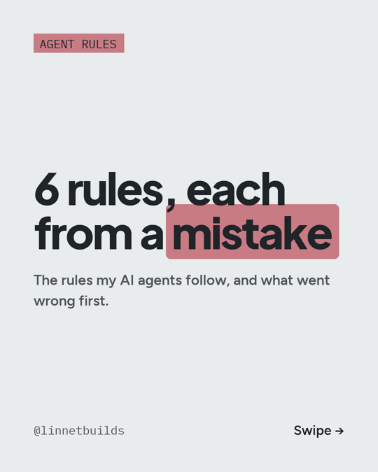

The rules my AI agents follow. Each one exists because something went wrong first.

- Fetch the record itself. A summary can omit context or get a number wrong. Before citing a number, date or quotation, retrieve the original record. See R03.
- Answer first. No praising the question, no narrating the method.
- Confess once. One clause, then the correct value.
- Cut every draft in half. Drafts that followed every other rule were still too long.
- Banned words, checked on write. A hook scans each file as it is saved.
- Unsure means unwritten. Exact match: written. Fuzzy: waits for me. None: not written.
Ready to paste, in English and Spanish, with the hook for rule 5: resources/agent-rules.
Cost: the rules and the hook are plain text files, $0. They need an AI coding tool; the minimum is Claude Pro, $20/month (prices as of Oct 2026).